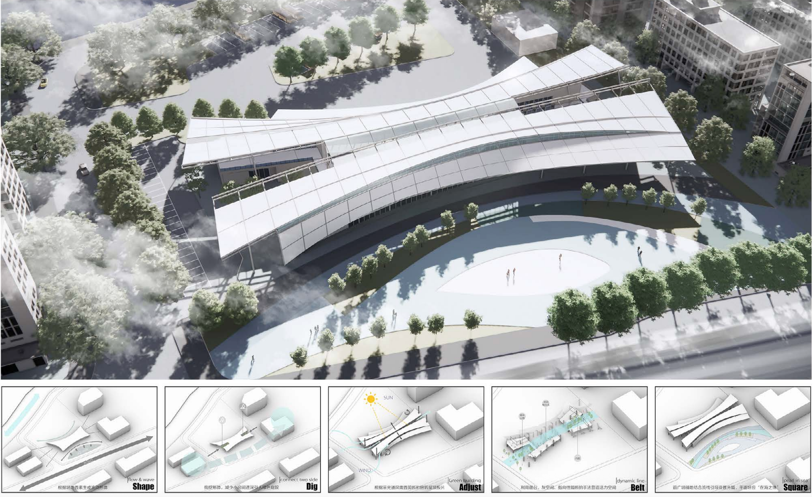
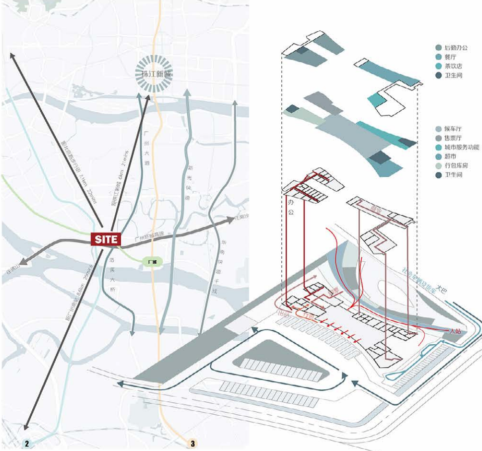
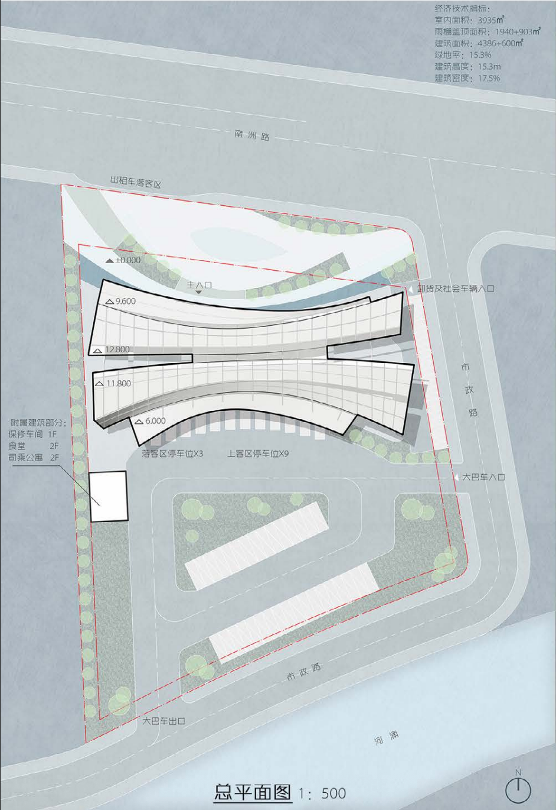
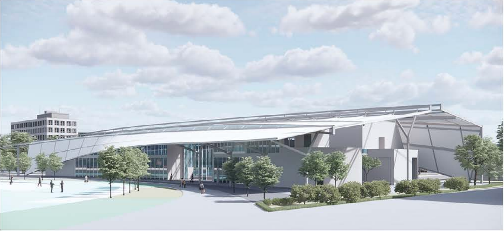
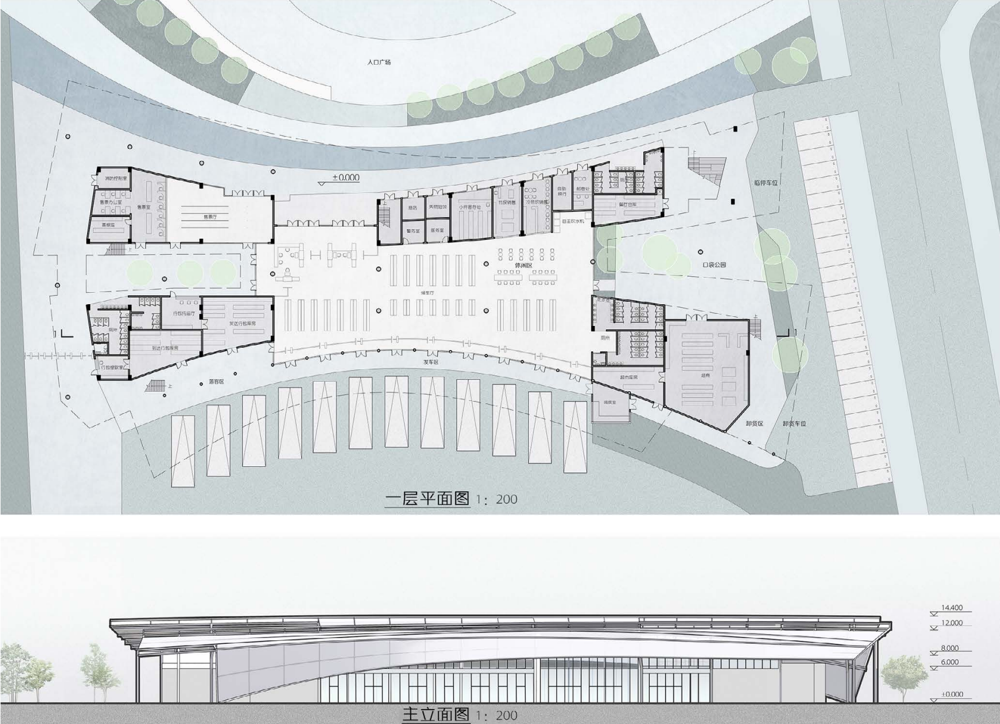
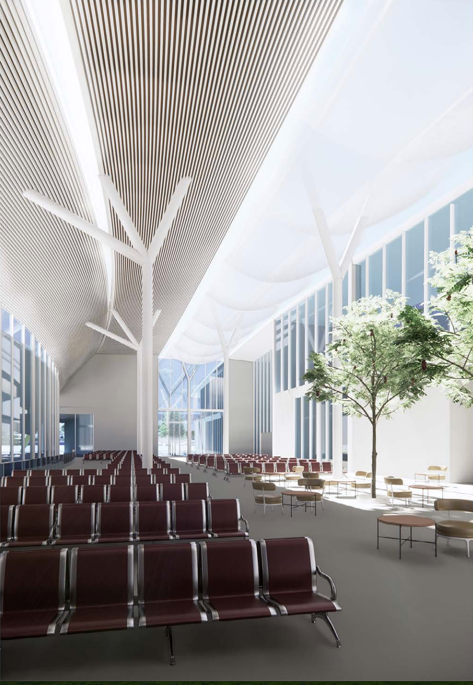
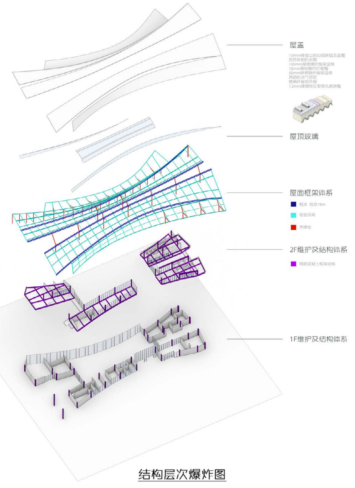
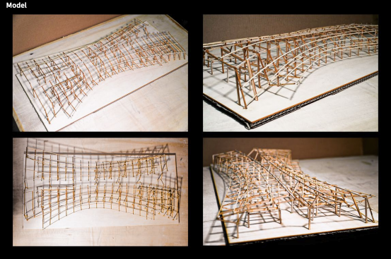

设计简介：造型顺延环境与周边建筑，展现出流动与舒缓的美感。两侧分置公园与内院，体现公共建筑的开放与人居设计的特色。屋顶的‘裂缝’应用绿色低碳建筑技术、作为采光天窗与通风散热廊道。前广 场作为城市门面,按流线划分的铺地材质，从空中鸟瞰则呈现在海之珠的图像。

整体鸟瞰效果图与形体生成

区位分析图与建筑路线组织分析


广场望向客运站

技术图纸

候车室内部渲染图


建筑结构模型
Design Concept: The form seamlessly extends from the surrounding environment and adjacent buildings, embodying a fluid and serene aesthetic. Parks and inner courtyards flank either side, embodying the openness of public architecture and the distinctive features of human-centered design. The “fissures” in the roof employ green, low-carbon building technologies, serving as skylights for daylighting and ventilation corridors for heat dissipation. The forecourt functions as the city's gateway, with paving materials arranged according to traffic flow patterns. When viewed from above, it reveals the image of a pearl of the sea.
Overall Bird's-Eye View Rendering and Form Generation
Site Analysis and Building Route Organization Analysis
The square overlooks the bus station
Technical Drawings
Rendering of the interior of the waiting room
Building Structural Model